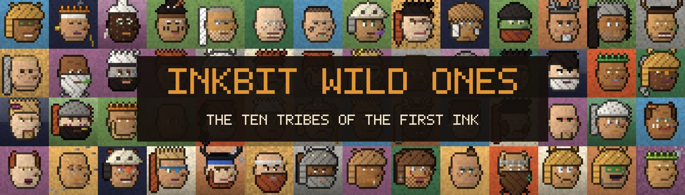

INK STREET The Inkbit Exchange is hiring 7,777 brokers · opens Oct 28, 20:00MARKET A Whale was seen scooping the dip with a spoonPET MEADOWS Census closes at 5,983 · one Golden Dragon registeredUNCHARTED ISLE 4,444 Wild Ones · ten tribes · the First InkDANGER ZONE Quarantine breaks Oct 30, 20:00APEPIXEL CITY 11 Misprints still hiding in the stackNOTICE Inkbit never DMs you to verify your walletINK STREET The Inkbit Exchange is hiring 7,777 brokers · opens Oct 28, 20:00MARKET A Whale was seen scooping the dip with a spoonPET MEADOWS Census closes at 5,983 · one Golden Dragon registeredUNCHARTED ISLE 4,444 Wild Ones · ten tribes · the First InkDANGER ZONE Quarantine breaks Oct 30, 20:00APEPIXEL CITY 11 Misprints still hiding in the stackNOTICE Inkbit never DMs you to verify your wallet

District 6 · The Uncharted Isle
Inkbit Wild Ones
4,444 tribespeople in ten tribes. They made the first ink.
WHERE THEY CAME FROM
Far east, past the Danger Zone, lies an island no map-maker ever finished. Long before the printer woke up in 1999, its people were grinding charcoal, red clay, berries and bone into ink and painting on the walls of their caves.
Every pixel in the Kingdom traces back to those cave walls.
WHO THEY ARE
The Wild Ones live as ten tribes, each keeping one colour of the First Ink: Ash, Stone, River, Antler, Tusk, Moss, Ember, Bone, Moon and Thunder.
They are ruled by one Supreme Chief, The First Flame, with ten Tribe Chiefs, twenty Advisors, a Council of one hundred and four hundred Band Leaders.
WHAT THEY DO
They guard the recipe for Pure Ink, the ink every other colour was mixed from. Only The First Flame knows it all. And they have never let an outsider onto their island. Until now.
A boat came back from the far east of the map this week, carrying sketches of an island nobody ever finished drawing: volcanoes, caves, campfires and ten tribes.
The explorers say the islanders call themselves the Wild Ones, and that they made the very first ink. If that's true, they may also know how to make Pure Ink, the only rumoured cure for Inkrot.
The Ink Chemist, the ape on Press Card 07, hasn't been seen at the print shop in days. The lab was left open, with blue ink drops leading to the harbour.
A ticket seller says the Chemist bought a single boat ticket, heading east. Towards the Uncharted Isle.